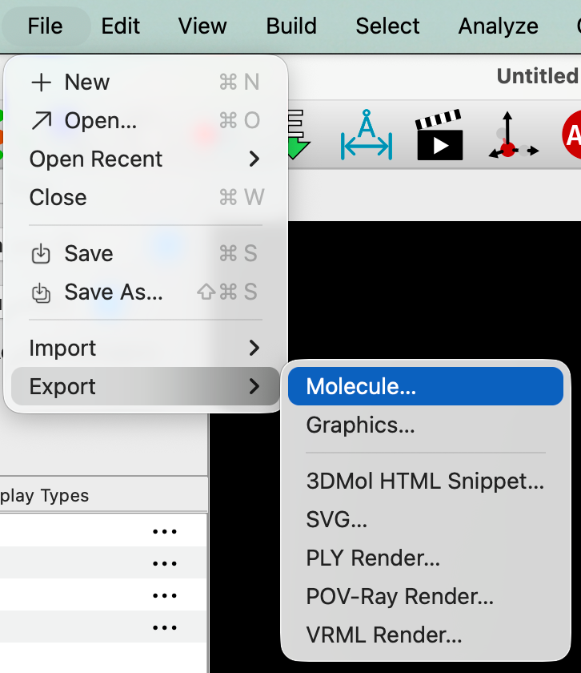
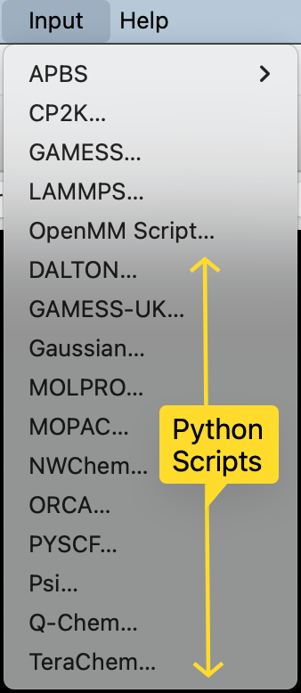

Interface Changes#
Many parts of the interface have changed in Avogadro 2.
Warning
During the development of Avogadro 2 betas, the interface is currently in flux, and menu items and tool icons will change.
Consequently, this documentation is still a work in progress. Some instructions and screenshots may be out of date.
Save vs Export#
Warning
File⇒Save now only allows saving to CJSON and CML formats.
All other formats are now exported instead, using File⇒Export⇒Molecule…
In Avogadro 1.0–1.2, users would be surprised that when saving to some formats (e.g., XYZ, PDB) and bond orders or other information would be lost. As a result, File⇒Save is now reserved for saving to CJSON and CML formats, which will retain all data and options.
If you wish to export to other formats (e.g., XYZ, PDB, SDF, etc.) use
File⇒Export⇒Molecule… instead.

Input generators#
The input generators which help format input for external programs like Gaussian, ORCA, CP2K, and LAMMPS have moved into a new Input menu of their own.
Many of these menu items use Python scripts, so if your menu does not include many options, make sure that Python is installed and configured to enable them.
